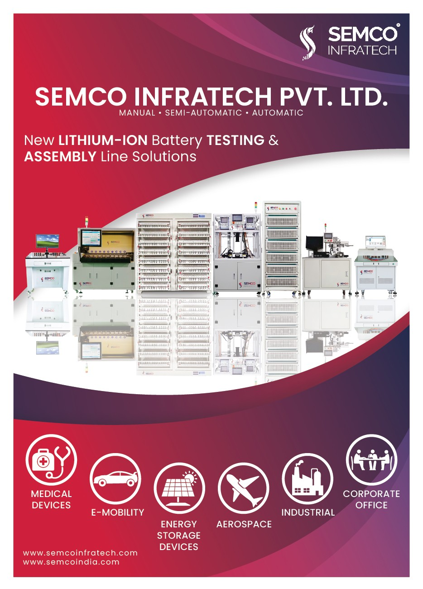
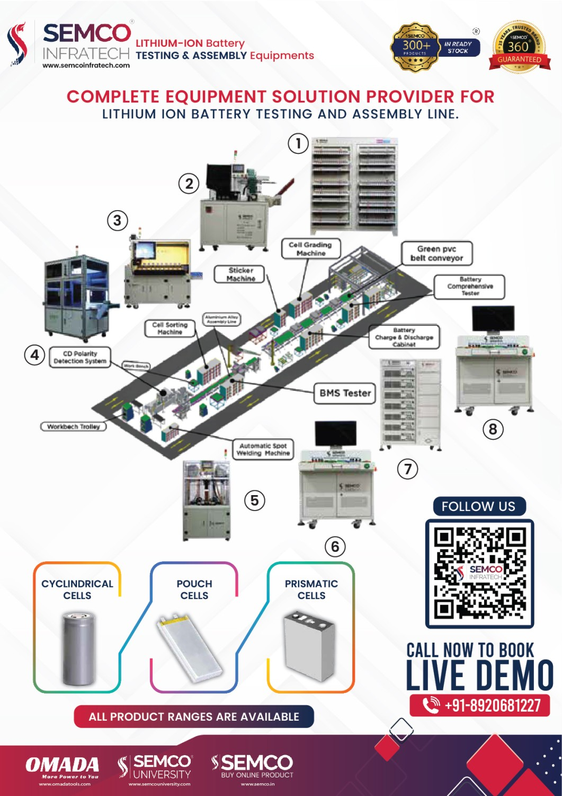

The battery pack typically refers to the combination of a battery, its processing, and assembly into lithium-ion battery packs. The key aspects involve processing the cells, battery protection plates, connectors, and labels to create the desired products for customers.
Battery packs are crucial in lithium-ion battery pack factories, which have their pack structure design, electronic design, and production workshops. These facilities can independently develop and design based on customer needs, reaching them through battery methods, specifications, and samples. Once the customized PACK lithium-ion battery requirements are confirmed, the production line will manufacture and process the PACK, followed by quality inspection and shipment.
The main points of the manufacturing process for lithium-ion battery pack energy storage power products are as follows:
Selection and Matching Group
Battery sorting involves selecting appropriate variables like internal resistance, polarization resistance, open-circuit voltage, rated capacity, charge/discharge efficiency, and self-discharge rate. The batteries are then classified based on their parameter consistency and grouped accordingly.
This process enhances the internal characteristic consistency of the batteries, improving the module's efficiency and extending its service life. Battery sorting methods include single-factor, multi-factor, and dynamic sorting approaches.
A matching method for lithium batteries includes the following steps:
- Test cell capacity: Install the cell to be divided into the detection equipment, charge and discharge the required current 3 times, and charge the voltage of the fourth single cell to the percentage range set by the rated capacity.
- Obtain the reference benchmark for the distribution group: Record the discharge capacity, constant current charging time, and voltage charging time of the third cell.
- Cell capacity sorting: According to the discharge capacity of the cell in the third cycle as the standard, set the lower limit capacity, and take the cell greater than the lower limit capacity as the qualified cell.
- Preliminary configuration of cells: Based on the parameters of the obtained constant current charging time and constant voltage charging time, the cells with qualified capacity and the same or similar constant current and constant voltage charging time parameters are grouped.
- Cell voltage drop: The battery will be equipped with a set of cells, and the cell will be stored for some time in the set environment to measure its voltage drop. After confirming the qualified standard of voltage reduction, the suitable cells will be selected.
- Cell final configuration: Select the cell with qualified voltage reduction, and carry out the final configuration with the cell with qualified voltage reduction.

Lithium Battery Pack Cell Assembly Fixture, Automatic Welding Machine When installing the battery fixture, it must be assembled in the order specified in the PE engineer's SOP, with the positive and negative electrodes of the cell. Reversing the order will cause a short circuit.
After setting up the automatic welding machine program, place the fixture cell in the machine and initiate the automated spot welding process. Upon completion, inspect the battery pack for any quality issues and reweld any leakage points.
Lithium Battery Pack Welding PCM/BMS
The PCM or PCB (protective circuit module or circuit board) is the "heart" of the lithium battery pack. It safeguards lithium batteries from overcharge, over-discharge, and short circuits, preventing battery pack explosion, fire, and damage.
For low-voltage lithium battery packs (<20 batteries), a PCM with a balancing function should be chosen to maintain the equilibrium and extend the service life of each battery. For high-voltage lithium battery packs (>20 batteries), an advanced BMS (battery management system) should be considered to monitor the performance of each battery, ensuring safer operation.
According to the battery pack design, different steps are required. If the design involves PCM spot welding, there is no need for soldering, and the quality must be ensured through spot welding to the battery pack. If PCM/BMS requires soldering, the connecting screw, solder joint, and screw connection point must be inspected to guarantee quality.
Semi-Finished Insulation
Necessary fixation and insulation of voltage acquisition wires, wires, and positive and negative output lines. The usual auxiliary materials are high-temperature adhesive tape, barley paper, epoxy board, tie, etc. Safety awareness is required. Do not superimpose and oppress the battery pack voltage collection line or output wire, which can easily lead to extrusion damage and short circuits.

Semi-Finished Product Testing
After the battery pack is added with BMS, a semi-finished product test can be carried out. The routine test includes the simple charge and discharge test, the whole group of internal resistance test, the whole group of capacity test, the whole group of overcharge test, the whole group of over-release test, the short-circuit test, and the overcurrent test. If there are special requirements, high temperature, and low-temperature tests, acupuncture tests, drop tests, salt spray tests, etc., a special lithium battery pack test, which is destructive, is recommended for random inspection.
It is necessary to pay attention to the bearing capacity of the battery pack, such as whether the BMS can withstand high voltage during the overcharge test of the whole set; whether the BMS can withstand instantaneous high voltage and high current during the short-circuit test; whether the BMS can withstand the pulse current during the overcurrent test, etc.
Pack Packaging
This step depends on the battery pack design. Before packaging, the signal collection line must be completed, and the battery pack must be insulated with positive and negative electrodes.
For a PVC-packaged battery pack, a heat-shrinking machine is required. The battery pack with an ultrasonic sealing method is processed on an ultrasonic machine. The battery pack with a metal outer box is assembled in the outer box. During this process, care must be taken to handle the battery pack gently, avoiding collision, compression, and other impacts. The wiring must be properly insulated to prevent short circuits
Conclusion
The lithium-ion battery pack manufacturing process involves selecting and matching battery cells, assembling the pack with a protective circuit module (PCM) or battery management system (BMS), performing semi-finished product testing, and carefully packaging the final battery pack. Battery sorting, welding, and insulation are crucial steps to ensure the pack's safety and performance.